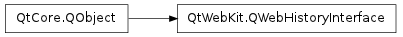

QWebHistoryInterface ¶

Synopsis ¶
Virtual functions ¶
- def addHistoryEntry (url)
- def historyContains (url)
Static functions ¶
- def defaultInterface ()
- def setDefaultInterface (defaultInterface)
Detailed Description ¶
The PySide.QtWebKit.QWebHistoryInterface class provides an interface to implement link history.
The PySide.QtWebKit.QWebHistoryInterface is an interface that can be used to keep track of visited links. It contains two pure virtual methods that are called by the WebKit engine: PySide.QtWebKit.QWebHistoryInterface.addHistoryEntry() is used to add urls that have been visited to the interface, while PySide.QtWebKit.QWebHistoryInterface.historyContains() is used to query whether the given url has been visited by the user. By default the PySide.QtWebKit.QWebHistoryInterface is not set, so WebKit does not keep track of visited links.
Note
The history tracked by PySide.QtWebKit.QWebHistoryInterface is not specific to an instance of PySide.QtWebKit.QWebPage but applies to all pages.
- class PySide.QtWebKit. QWebHistoryInterface ( [ parent=None ] ) ¶
-
Parameters: parent – PySide.QtCore.QObject Constructs a new PySide.QtWebKit.QWebHistoryInterface with parent parent .
- PySide.QtWebKit.QWebHistoryInterface. addHistoryEntry ( url ) ¶
-
Parameters: url – unicode Called by WebKit to add another url to the list of visited pages.
- static PySide.QtWebKit.QWebHistoryInterface. defaultInterface ( ) ¶
-
Return type: PySide.QtWebKit.QWebHistoryInterface Returns the default interface that will be used by WebKit. If no default interface has been set, Webkit will not keep track of visited links and a null pointer will be returned.
See also
- PySide.QtWebKit.QWebHistoryInterface. historyContains ( url ) ¶
-
Parameters: url – unicode Return type: PySide.QtCore.bool Called by the WebKit engine to query whether a certain url has been visited by the user already. Returns true if the url is part of the history of visited links; otherwise returns false.
- static PySide.QtWebKit.QWebHistoryInterface. setDefaultInterface ( defaultInterface ) ¶
-
Parameters: defaultInterface – PySide.QtWebKit.QWebHistoryInterface Sets a new default interface, defaultInterface , that will be used by all of WebKit to keep track of visited links.
If an interface without a parent has already been set, the old interface will be deleted. When the application exists PySide.QtWebKit.QWebHistoryInterface will automatically delete the defaultInterface if it does not have a parent.